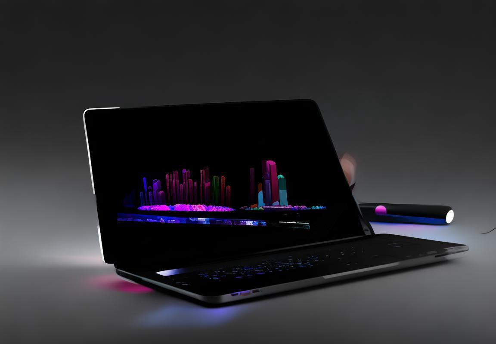

某跨国公司近期举办了一场全球性的商务会议，这场会议汇聚了来自不同国家的精英。然而，语言的差异成了沟通的难题。就在这时，他们选择了Deepl翻译，这个翻译界的“黑科技”成了他们的得力助手，让沟通变得更加顺畅。接下来，我们就来聊聊Deepl翻译是如何在这个跨国会议中发挥作用的。
Deepl翻译：翻译界的“黑科技
Deepl翻译，这个名字听起来就带有一种神秘的科技感，它就像是翻译界的“黑科技”，能够在瞬间打破语言的壁垒，让沟通无国界。那么，Deepl翻译究竟有何独到之处，能让它在众多翻译工具中脱颖而出呢？
Deepl翻译的核心竞争力在于其精准的翻译效果。它利用了深度学习技术，通过对海量数据的分析，不断优化翻译模型，使得翻译结果更加接近人类母语者的表达。比如，当你需要将一段商务邮件从英文翻译成中文时，Deepl不仅能准确传达每一个单词的意思，还能考虑到语境和语气的微妙变化，让你的邮件听起来既专业又自然。
再来说说Deepl翻译的用户体验。它的界面简洁明了，操作起来非常方便。你只需要将需要翻译的文本粘贴到输入框中，点击翻译按钮，就能立刻得到结果。而且，Deepl支持多种语言的翻译，无论是英语、西班牙语、法语还是中文，它都能轻松应对。
跨国商务会议中，Deepl翻译的作用更是不可小觑。想象一下，一场涉及多个国家和地区的商务会议，不同语言的交流成了最大的挑战。这时候，Deepl翻译就能派上大用场。它可以实时翻译发言者的讲话，让所有人都能够理解对方的观点，从而提高会议的效率。
Deepl翻译在处理专业术语方面也表现出色。在商务领域，专业术语往往非常复杂，如果翻译不准确，可能会导致误解甚至损失。Deepl翻译拥有庞大的专业术语库，能够确保在翻译过程中，这些术语得到准确的对应。
当然，Deepl翻译也不是没有缺点。比如，它虽然翻译准确，但在某些情况下可能无法完全理解语境和深层含义，这就需要翻译者具备一定的语言敏感度和专业知识，对翻译结果进行二次校对和调整。
举个例子，假设一家中国企业在德国举办产品发布会，产品介绍中包含了许多行业专有名词。使用Deepl翻译，可以确保这些名词在德语中的准确表达。但在发布会后的问答环节，可能需要对翻译结果进行人工调整，以确保问答的流畅性和准确性。
Deepl翻译是一款非常强大的翻译工具，它凭借其精准的翻译效果、便捷的用户体验和丰富的功能，成为了跨国商务沟通的得力助手。当然，任何工具都无法做到完美，Deepl翻译也不例外。在使用时，我们应充分发挥其优势，同时也要注意其局限性，确保沟通的准确性和有效性。

跨国商务会议中的翻译难题
跨国商务会议中的翻译难题，就像一场没有硝烟的战斗。在这个全球化的时代，语言不再是沟通的障碍，而是变成了理解和误会的桥梁。以下是一些跨国商务会议中常见的翻译难题，让我们一起来看看如何克服它们。
专业术语的“迷宫”
商务会议中，专业术语如同迷宫，翻译者需像侦探一样抽丝剥茧，才能找到准确的翻译。比如，“市占率”这个词汇，如果简单地翻译为“market share”，可能会丢失其中的深意。正确的翻译应该是“市场份额”，这样才能准确传达出企业的市场地位。
文化差异的“暗礁”
文化差异是跨国商务会议中的另一大难题。同一个词在不同的文化背景下可能有完全不同的含义。比如，在西方文化中，“time is money”强调时间就是金钱，而在某些东方文化中，可能更强调的是关系和人情。这种差异可能导致误解，甚至影响商务合作。
语言习惯的“迷雾”
不同语言有不同的表达习惯，这给翻译工作带来了挑战。例如，中文中常常使用“您”来表示尊敬，而在某些英语国家，直接使用“you”也能传达出同样的尊重。如果不了解这些语言习惯，翻译出的内容可能会显得生硬或不礼貌。
实时沟通的“压力锅”
跨国商务会议往往需要实时翻译，这对翻译者的反应速度和准确性提出了极高要求。翻译者需要在极短的时间内理解、翻译并传达信息，这就像是在压力锅中工作，稍有不慎就可能出错。
语言障碍的“无间道”
有时候，即使是母语者也可能在特定的语境中感到困惑。比如，一些成语或俚语在字面上很难理解，但如果翻译者能够结合上下文和背景知识，就能准确传达其深层含义。
技术术语的“迷局”
随着科技的发展，商务会议中涉及的技术术语越来越多。这些术语往往专业性极强，对翻译者的知识储备和翻译能力都是一大考验。例如，“区块链”这个词汇，就需要翻译者不仅了解其基本概念，还要能准确翻译其应用场景。
情绪表达的“捉摸不定”
商务会议中，情绪表达同样重要。有时候，一个微笑、一个点头、一个停顿，都可能蕴含着重要的信息。翻译者需要能够捕捉到这些微妙的情绪变化，并将其准确传达给对方。
非语言信息的“解码器”
除了语言本身，非语言信息（如肢体语言、面部表情）也是沟通的重要组成部分。在跨国商务会议中，翻译者需要像解码器一样，将这些非语言信息准确转换成语言，以便各方都能理解。
面对这些翻译难题，以下是一些建议：
- 提前准备：在会议前，翻译者应充分了解参会者的背景信息、行业知识以及可能出现的专业术语。
- 沟通协调：翻译者应与参会者保持良好沟通，确保双方都能理解对方的意图。
- 适应变化：翻译者需要具备灵活应变的能力，能够迅速适应不同的会议环境和沟通需求。
- 终身学习：翻译者应不断学习新知识，提升自己的专业素养和翻译技巧。
跨国商务会议中的翻译难题是多方面的，需要翻译者具备深厚的语言功底、丰富的经验和敏锐的洞察力。通过不断努力，我们相信这些难题终将被攻克，为跨国商务合作搭建起一座坚实的沟通桥梁。
Deepl翻译在跨国商务会议中的应用
跨国商务会议中，Deepl翻译扮演着不可或缺的角色。它就像一位多语言的好助手，让不同国家、不同语言的人们能够无障碍地交流。下面，我们就来聊聊Deepl翻译如何在商务会议中施展它的魔法。
想象一下，你正在和一个德国客户讨论一份商业计划书。对方说着德语，而你英语流利，但是对德语一窍不通。这时候，Deepl翻译就派上用场了。你只需要把对方的德语文本复制粘贴到Deepl翻译的输入框里，瞬间，文本就变成了你熟悉的英语。这样一来，沟通起来就方便多了。
Deepl翻译在商务会议中的应用，不仅仅局限于即时翻译。它还有以下几大亮点：
- 专业术语精准匹配商务会议中，专业术语的使用至关重要。Deepl翻译内置了丰富的专业词汇库，能够精准地将“净利润”翻译为“Net Profit”，或是将“市场份额”翻译为“Market Share”。这样的翻译准确性，有助于避免误解，确保会议的顺利进行。
- 实时语音翻译对于需要即时翻译的场景，Deepl的实时语音翻译功能堪称神器。参会者可以通过麦克风输入语音，Deepl翻译会即时输出翻译结果。这对于那些需要即时交流的商务会议来说，效率极高。
- 多平台支持Deepl翻译不仅可以在网页上使用，还支持各种移动设备和应用程序。这意味着，无论你是在会议室、机场还是酒店，只要有网络，就能随时随地使用Deepl翻译，进行跨语言的交流。
- 用户友好界面Deepl翻译的界面设计简洁明了，操作简单。即便是技术小白，也能快速上手。这样的用户体验，无疑为商务会议中的翻译工作提供了极大的便利。
- 个性化设置Deepl翻译允许用户根据自己的需求进行个性化设置。比如，你可以调整翻译的流畅度与准确度之间的平衡，或是根据场合选择合适的翻译风格。
举个例子，有一次我在参加一个中美商务会议时，对方提到了“供应链金融”这个概念。由于这个词汇在我的英语词典里并不常见，我一时无法理解其含义。但是，通过Deepl翻译，我立刻知道了它指的是“Supply Chain Finance”，从而迅速把握了对方的观点。
Deepl翻译还能帮助参会者理解文化差异。比如，在讨论商务礼仪时，Deepl会提醒翻译者注意不同国家的商务习惯差异，避免在沟通中产生尴尬。
Deepl翻译在跨国商务会议中的应用，极大地提高了沟通效率，减少了误解的可能性。它就像一位懂你心意的翻译专家，让你在全球化的商务舞台上，能够更加自信地表达自己。
案例分析：Deepl翻译助力某跨国公司会议
某跨国公司近期举办了一场跨国商务会议，这次会议汇集了来自不同国家和地区的业务精英。为了确保沟通无障碍，公司选择了Deepl翻译作为会议的翻译工具。以下是Deepl翻译在这次会议中的应用情况：
会议前准备
会议前，Deepl翻译团队对参会者的背景资料进行了仔细分析。他们不仅关注参会者的母语，还特别留意了他们的专业领域和行业术语。这样的准备工作确保了在会议中，无论是讨论市场策略还是技术细节，Deepl翻译都能提供准确无误的翻译。
实时翻译
会议当天，Deepl翻译的实时翻译功能发挥了关键作用。随着会议的进行，翻译器迅速将发言者的语言转换成其他参会者的母语。例如，一位来自德国的工程师在讨论产品规格时，他的德语发言被即时翻译成英语，让其他国家的同事能够轻松理解。
专业术语处理
商务会议中，专业术语的使用是必不可少的。Deepl翻译在处理这些术语时表现出色。比如，当讨论到“供应链管理”这一概念时，翻译器不仅准确地将“Supply Chain Management”翻译成中文，还确保了翻译的语境与原意相符。
文化差异的识别
跨国商务会议中，文化差异可能会引起误解。Deepl翻译在这一点上也做得很好。例如，当一位日本代表提到“关系营销”时，翻译器不仅翻译了字面意思，还提示了日本文化中重视人际关系的特点，帮助其他参会者更好地理解了这一概念。
交流效率提升
Deepl翻译的实时翻译功能显著提高了会议的交流效率。以往，翻译人员可能需要几秒钟甚至几分钟才能完成翻译，而Deepl翻译几乎在发言者说完话的同时就能提供翻译，这大大缩短了沟通的时间。
案例分析
会议中，有一个小插曲让人印象深刻。一位来自中国的市场营销经理在介绍产品时，提到了一个在中国文化中具有特殊意义的词汇。Deepl翻译不仅准确翻译了这个词汇，还在翻译中加入了注释，解释了其背后的文化含义，这让其他国家的同事感到非常高兴，因为他们能够更加深入地理解中国市场。
技术支持
Deepl翻译不仅提供了高质量的翻译服务，还提供了强大的技术支持。在会议期间，如果翻译出现任何问题，Deepl团队能够迅速响应并提供解决方案，确保会议的顺利进行。
会议反馈
会议结束后，参会者对Deepl翻译的表现给予了高度评价。他们表示，Deepl翻译的准确性和实时性极大地提高了会议的效率，使得不同国家的同事能够更加顺畅地交流。
有力结尾
通过Deepl翻译的应用，这次跨国商务会议取得了圆满成功。它证明了在全球化时代，有效的翻译工具对于促进国际商务合作的重要性。Deepl翻译以其出色的性能，为跨国公司提供了一个沟通无界的桥梁。